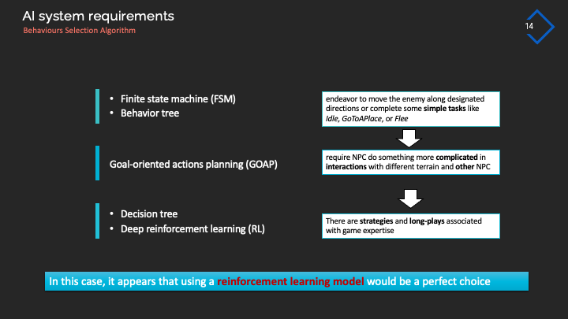
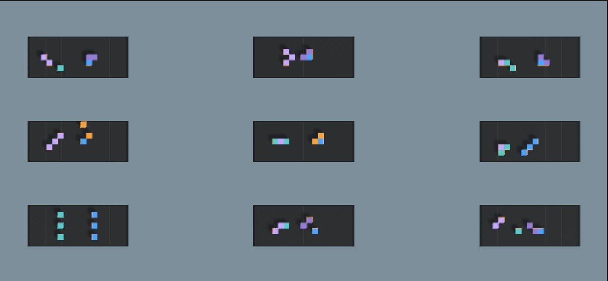
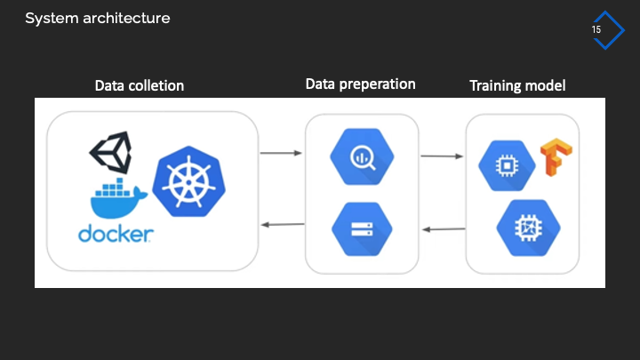
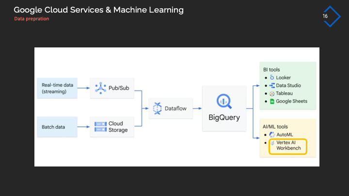

GENERAL INFORMATION
In late 2022, I was fortunate to secure an internship position as a game programmer at Landell Games, where I joined the development team working on their real-time strategy (RTS) title, Dawn of Empires. This invaluable opportunity has provided me with a firsthand experience of the game industry and has allowed me to gain insights into collaborative team dynamics in the context of an actual game development project.
- Website: Dawn of Empires
MY CONTRIBUTION
Game programmer: Modifying the finite state machine (FSM) system, implementing the NavMesh system of Unity following specific requirements, and programming gameplay following game design.
Game machine learning researcher: How to use ML-Agent of Unity to develop a virtual player that improves its skills as it plays over time.
WHAT I DID
1. AI in game programming
As an AI programmer on this project, my primary role revolves around crafting the intricate behaviors of non-playable characters (NPCs) that populate the world of Dawn of Empires. My responsibilities encompass not only designing the NPCs' behaviors but also ensuring their seamless integration with the game's Navmesh system. This crucial collaboration between an AI system like behaviour tree and navigation systems is essential to bring the NPCs to life, enabling them to navigate the game world with finesse, respond intelligently to in-game stimuli, and contribute to the overall immersive experience that players will encounter in this strategic realm.
Forming a group of units in certain shapes
Work with building system
Modifying NPC's behaviours as workers based on project owner
2. Game machine learning research
Question
"How can I use ML-Agent of Unity to develop a virtual player that improves its skills as it plays over time?”
Solution: Reinforcement learning model
RL has several advantages when applying it in multiplayer RTS games to deal with the case lacking of players in the very first stage of the game: * RL agents can learn to play the game without any human supervision. This is important for RTS games, where it can be difficult to find enough players to test the game in the early stages of development. * RL agents can adapt to different opponents and strategies. This is important for RTS games, where players often use different strategies to win. * RL agents can be used to create bots that can play against human players. This can help to improve the player experience, even when there are not enough human players available.
How to design the Reinforcement learning models for this game?
-
* Analyse the requirements and design an AI system for these requirements: I highlighted specific AI systems and explained the scenarios where they should be applied
 -
* Build training environment by ML-Agent of Unity
 -
* Dock it on cloud using Google Cloud Services & Docker: GCS becomes an integral part of the process by offering its tools. Pub/Sub will be utilized for real-time data gathering, while Cloud Storage will collect batch data. Data engineering tasks will be carried out in Dataflow. Lastly, VertexAI of BigQuery serves as the platform for model training
  -
* Implement the models in NPCs: I packaged the game into a playable version, challenge players by a machine-learning opponent. In this game, the player commands the blue faction while the virtual player controls the orange faction. The primary objective of this game is to strategically jump over obstacles in order to trigger attack abilities and defeat opposing units. As you can observe, winning against the AI player is no simple feat.
-
Honestly, training a real-time reinforcement learning model with ML-Agent of Unity is currently a nearly impossible task. However, the emergence of the new tool, Sentis, could bring a fresh perspective and unlock the potential of reinforcement learning in the gaming industry.
© BinhLai, 2021